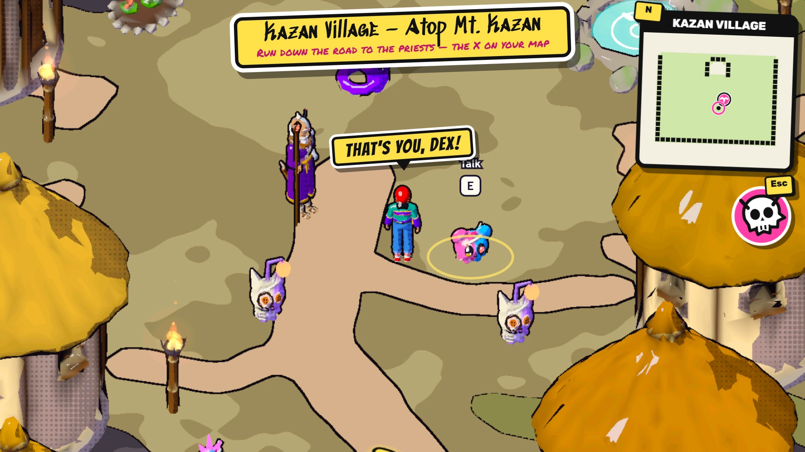
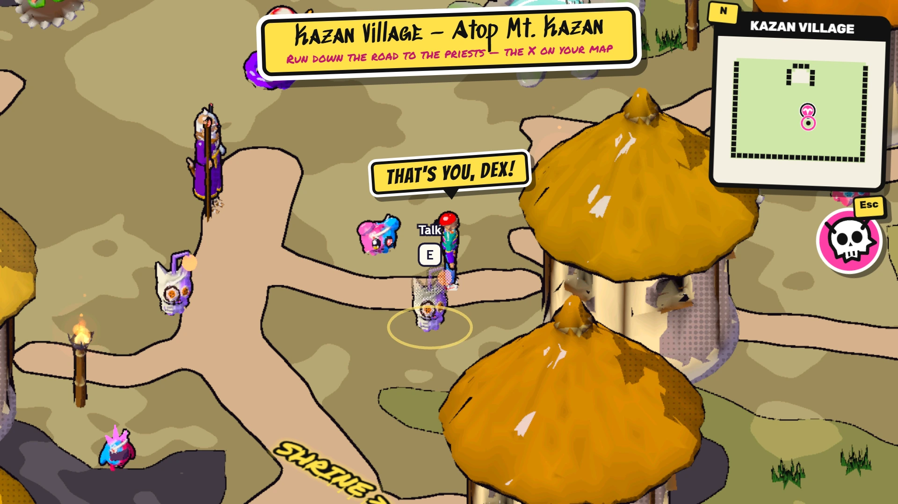
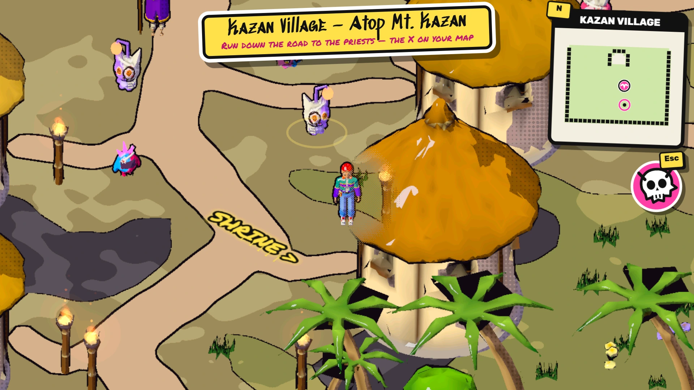

Dachis — a free monster-friend RPG in your browser
New York City, 1992. A kid lost in a crowd walks down an alley, and a red hand reaches out of a black, spiralling hole and pulls them through. They fall toward an island in the ocean, where the monsters are called dachis — friends. Befriend them, fight beside them in real time and save their world. Free, in your browser, no download.



The story: a spiral in an alley, a village on a volcano
Just before the kid hits the ground a flying dachi catches them and carries them to the top of a volcano. An old dachi — half animal, half human, half machine — says he has been expecting them. Dachis come out of the huts, some of them hurt, and among them is a tiny pink dachi, half teddy bear and half robot. There is no time to ask what is wrong with her: the priests in the next village are waiting for an initiation, and the kid says, a little tearful and very confused, “All right, I will do it.”
You can play the kid as a boy or a girl. Both are dressed straight out of 1992: a backwards cap or a high ponytail, headphones round the neck and a tape player on the hip.
Your guardian, and the first choice
On the road to the priests a dachi jumps out from behind the rocks. An orange dachi, half dragon and half skeleton with a cute face, steps in and says he is your guardian — and for one fight you command him, three special attacks that each hit for 9999. Then something like a god asks you what matters most: Power, Wisdom or Adventure. Your answer is your first partner: a half-cyborg baby dragon that breathes fire, a round blue mouse, or a monkey who is half wizard knight. You only get one, unless you start again.
Real-time battles: you shout, your dachi fights
When a wild dachi finds you the world stops, and the patch of map you are standing on becomes the arena. Your dachi runs, chases and circles on its own and attacks by itself; you stand at the side and call the specials — beams, flurries, slams, traps, drains, hexes and shields — guard, keep away, or time a parry to turn a blow into a counter. The wild ones are smart enough to use their own specials, so the fight is in reading them.
Every dachi has one of twelve elements and one of three attributes: vaccine beats virus, virus beats program, and program is neutral. Get both right and a fight is over fast; get both wrong and you will want your parry.
The capture ritual, on the beat
You do not throw a ball. When a wild dachi is down below a quarter of its health, tap it and play the ritual: a series of passes in time with the music, on keys 1, 2 and 3, a gamepad stick or a finger on the screen. Every pass right means a common dachi always joins you; rarer dachis are harder to win over. Corrupted dachis — the ones with glowing, fractured red skin — are cleansed when they join, and become themselves again.
Dachi World
The goal is to save the whole of Dachi World, from magma volcanoes to ice, beaches, the deep sea, forests, jungles, caves and a last level in the sky, where you find out what is making the dachis sick. Along the way stand bosses with a very philosophical view of the world, and an explanation for everything their god is doing. Stand on the right spot and a “!” appears over the kid: relics, potions, music and hats for your dachis are hidden all over the island.
What you can play today
Dachis is being built in the open. The opening cutscene, Kazan Village on the volcano, the road down to the shrine, the guardian fight, the three starters, wild battles, parries and the capture ritual all work now, on a computer or a phone. The later regions and the bosses arrive in updates.
Tips for a new dachi tamer
- Watch for the wind-up. Every basic strike has a tell. When a “!” and a closing ring appear over your dachi, parry (G on a keyboard) and it strikes back.
- Mind the attributes. A vaccine dachi hits a virus one half as hard again. The badge is on every name plate.
- Do not finish it off. If you want to befriend a wild dachi, order your partner to keep away once it is low, then start the ritual.
- Heal between fights. Losing sends you back to the spring, not back to the start.
Questions
Is Dachis free?
Yes. It is free, with no sign-up and nothing to download or install. It opens in the browser tab you already have.
What is a dachi?
Dachi is short for tomodachi, the Japanese word for friends. Dachis are the monsters of Dachi World, and every one of them is meant to be a friend of humans — except the ones a sickness has corrupted, which glow with fractured red skin.
How do battles work?
In real time. A patch of the map closes off and your dachi runs, chases and fights on its own while you stand at the side and shout orders: special attacks, a guard, a timed parry, keep away. Wild dachis use their own specials, so reading them is half the fight.
How do I catch a dachi?
Wear it down below a quarter of its health, then tap it and play the capture ritual: a series of passes in time with the music, on keys 1, 2 and 3, a gamepad or a finger. The cleaner the passes, the better the chance; a common dachi with every pass right always joins you.
Does it work on a phone?
Yes. It runs in a modern phone browser with on-screen touch controls, and on a computer with the keyboard or a gamepad. A newer phone gives the smoothest frame rate.
Is the whole game finished?
No. The opening, the volcano village, the first road, the guardian fight, the three starters, wild battles and capturing are all playable now. The later regions and bosses are still being built, and the game grows with each update.
Do I need an account?
No. There is no account to make. Your game is saved in your own browser, so it is there when you come back on the same device. The site sets no cookies and keeps anonymous counts only.
More from the studio
For another world to live in, Moon Life is a cosy life game on a tiny moon with an orchard and a cat landlord, and Silk & Seam is a dressmaking game in a busy town. For something faster, Splatbarn is capture the flag with farm animals, and Evil Hills is PS1-era survival horror. Every game is listed on the home page, and the reviews page says what is good and what is not about each of them.